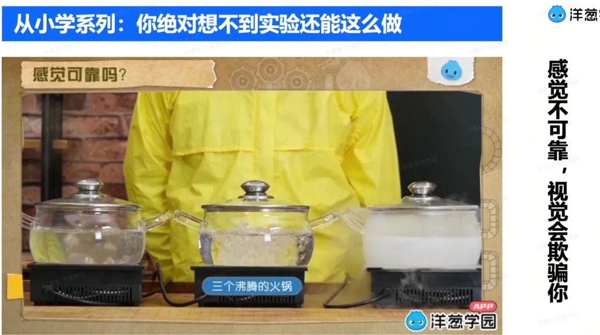
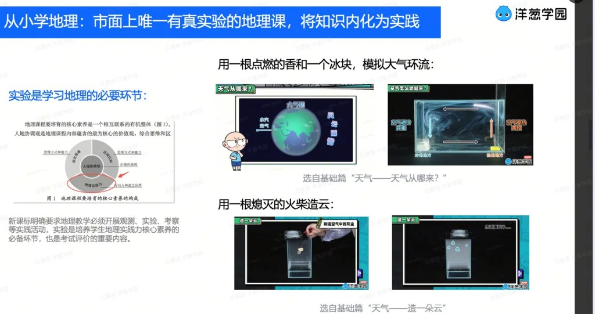
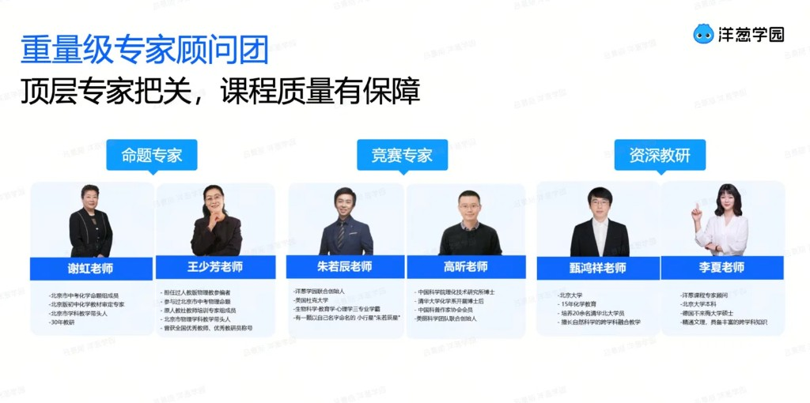
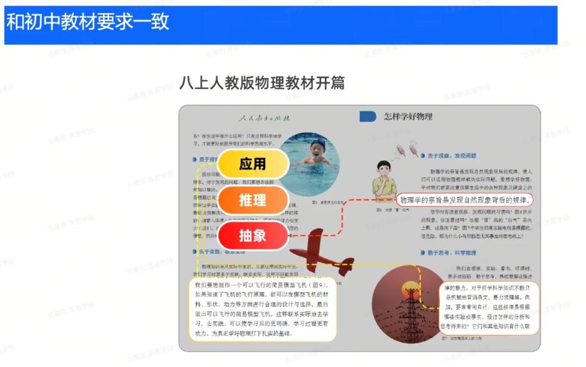
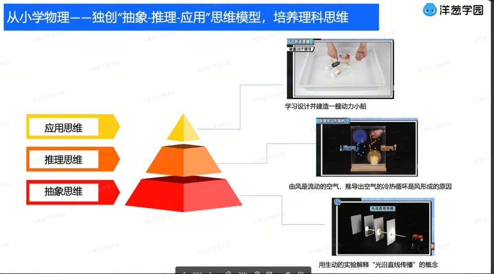
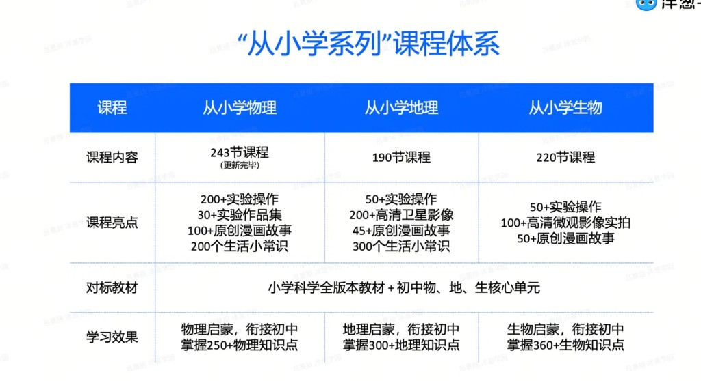
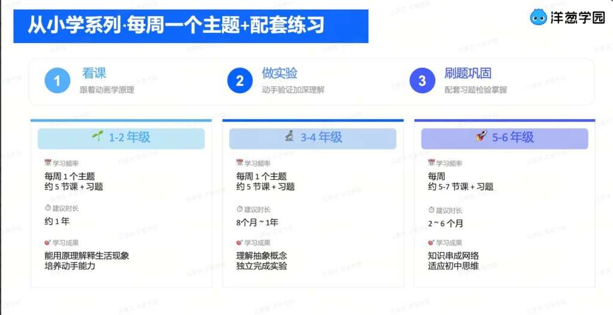

洋葱从小学系列,是专为小学生打造的
理科学科启蒙体系课。
不是浅尝辄止的科学故事,也不是提前硬学初中教材,而是用动画、实验和生活现象,把抽象理科讲成孩子爱看、听得懂、说得出、做得到的知识。
科普讲不深,教材又太早——
这中间,叫学科启蒙。
关键不是说"好玩"或"有用",而是直接定义一个家长需要、但市场还没说清楚的位置——兴趣科普讲不深,教材先修又太早,中间那一段才是我们的主场。
「从小学系列」是市面唯一专为小学阶段打造的理科学科启蒙体系课,覆盖物理、化学、生物、地理四大学科。
它依托洋葱小初高贯通的理科教研体系,把未来理科学习中的核心概念、关键原理和思维方式,转化成小学生爱看、能理解、能表达、能动手验证的启蒙内容。
先让孩子愿意看,这是买课的第一理由;再回答家长三件事:为什么不是普通科普?孩子能不能学懂?我怎么知道有效?
启蒙的第一步,是孩子先愿意打开。买课的第一理由,从来不是"有用",而是孩子"爱看"。


从未来理科学习反向设计,孩子不是只知道几个科学冷知识,而是建立对学科的框架感。


这是所有竞品的共同短板,也是洋葱最核心的差异化:先让孩子听懂,再让孩子愿意继续学。

家长最大的焦虑不是孩子不爱学,而是花了钱不知道有没有用。竞品普遍没解决,我们用闭环和报告解决。
从小学物理、地理到生物,体系化覆盖,对标小学科学全版本教材 + 初中物、地、生核心单元。

跟着动画学原理。从生活里的彩虹、影子、回声、热气球出发,让孩子先愿意问"为什么"。
动手验证加深理解。让孩子亲手做、亲眼看,在观察现象中理解背后的原理。
配套习题检验掌握。让孩子说出原理、解释现象、完成练习,启蒙效果才真正被看见。

详情页和直播间优先露出大数字,再用一句话解释数字背后的价值。
让科学不止好玩,让理科开始成形。